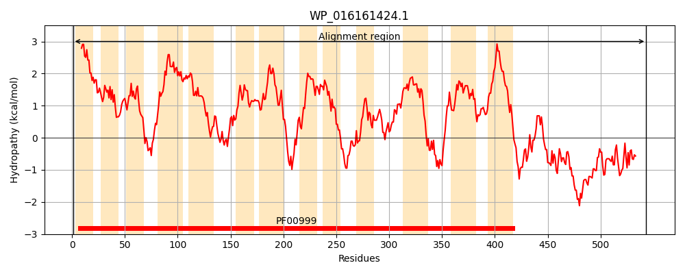
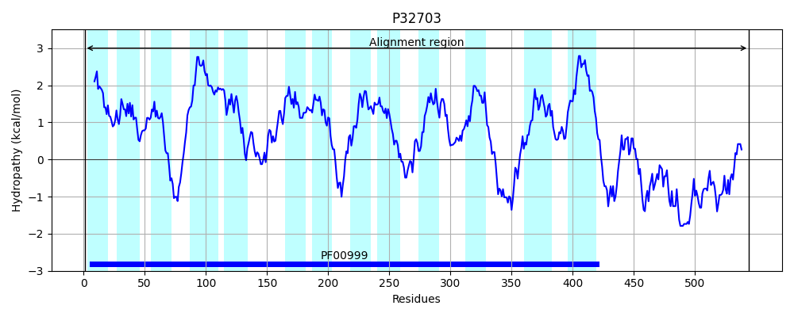

Hit Accession: P32703
Hit TCID: 2.A.36.3.1
Hit Description: gnl|BL_ORD_ID|9851 gnl|TC-DB|P32703|2.A.36.3.1 PUTATIVE NA(+)/H(+) EXCHANGER YJCE - Escherichia coli.
Mach Len: 551
e:0.000000
Query TMS Count : 13
Hit TMS Count: 13
TMS-Overlap Score: 11.150000
Predicted Substrates:None
BLAST Alignment:
Score: 920 , Bit scores: 358 bits, E-value: 5.8e-118, Alignment length: 551, Percentage identity: 38
Query: 1 MSLITIVLVFMMAIVVTVFVSHLLPVKVPLPLIQIAAGAALA--AGGFQVDFDPHIFLLLFIPPLLFLDGWRIPKDAFFRDMKPILSLAIGLVMVTILGIGLFIHWLIPAITVAAGFALAAILSPTDPVAVSAMTASSPLPSRMAHILEGESLLNDASGLVAFNFAIAAVL-TGSFSPGDAVVKFFLMAFGGILSGLVVVWVTGKCNNFLVRRTREEPAIQILISLLIPFAAYLLAEAFHVSGILAAVAAGIAMHYEQLSGPRLPATRMKSSAVWTMLQTTLNGMIFLMLGEQLPRMLNTLPAVASQAGVSSPWYLLLYAVAITLALGLMRFAWVWLSMTLTIFRRKRRGKAITIRPRFSIMAVMALAGVKGSVTLAGILTLPVLLADGSPFPGRELLIFLSMAVILMSLIVAAVGLPYMTQYL-ADDLPHDTGKDNIGAVMTE----VAINRLNALLDESVDDPNEQALRVDAGNMLLETYQRRLHYNDSDEEQDVGLELAKRARLEKYMQREVIIAQRQELFRLRRAHNISDTTFYEVLREIDLKEESL 543
M + +L+ + + ++ V+ ++P ++PLPL+QIA GA LA G V+FDP +FL+LFIPPLLF DGW+ P F + I LA+ LV+VT++GIG I+W++P I + FALAA+LSPTD VA+S + +P ++ IL+GE+L+NDASGLV+ FA+A + T F+ G A V+F +A GGIL+G VV W+ G+ FL R +EPA QI++ L+PFA+YL+AE VSGILAAVAAG+ + + A R+++++ W ML+ NGM+FL+LG QLP +L T A W L + I AL L+RF W+W + K++ I+ + + AGV+G++TLAG+L++P+LL DG+ FP R L+FL+ VIL SL V V LP + Q++ D ++ I T VAI ++ L ++ + L + + ++ +RR +D DV + + LE+ + + ++R EL+ LR IS+ T ++L ++DL E L
Sbjct: 1 MEIFFTILIMTLVVSLSGVVTRVMPFQIPLPLMQIAIGALLAWPTFGLHVEFDPELFLVLFIPPLLFADGWKTPTREFLEHGREIFGLALALVVVTVVGIGFLIYWVVPGIPLIPAFALAAVLSPTDAVALSGIVGEGRIPKKIMGILQGEALMNDASGLVSLKFAVAVAMGTMIFTVGGATVEFMKVAIGGILAGFVVSWLYGRSLRFLSRWGGDEPATQIVLLFLLPFASYLIAEHIGVSGILAAVAAGMTITRSGVMRRAPLAMRLRANSTWAMLEFVFNGMVFLLLGLQLPGILETSLMAAEIDPNVEIWMLFTNIILIYAALMLVRFGWLWTMKKFSNRFLKKKPMEFGSWTTREIL-IASFAGVRGAITLAGVLSIPLLLPDGNVFPARYELVFLAAGVILFSLFVGVVMLPILLQHIEVADHSQQLKEERIARAATAEVAIVAIQKMEERLAADTEENIDNQLLTEVSSRVIGNLRRR-----ADGRNDVESSV-QEENLERRFRLAALRSERAELYHLRATREISNETLQKLLHDLDLLEALL 544 | Protein Hydropathy Plots: |
|---|
|  |  |
Pairwise Alignment-Hydropathy Plot:
|
|---|
 |